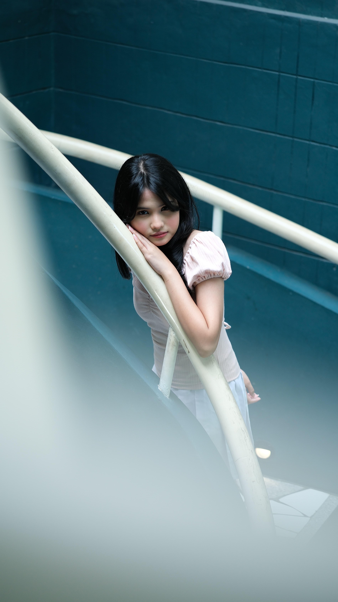
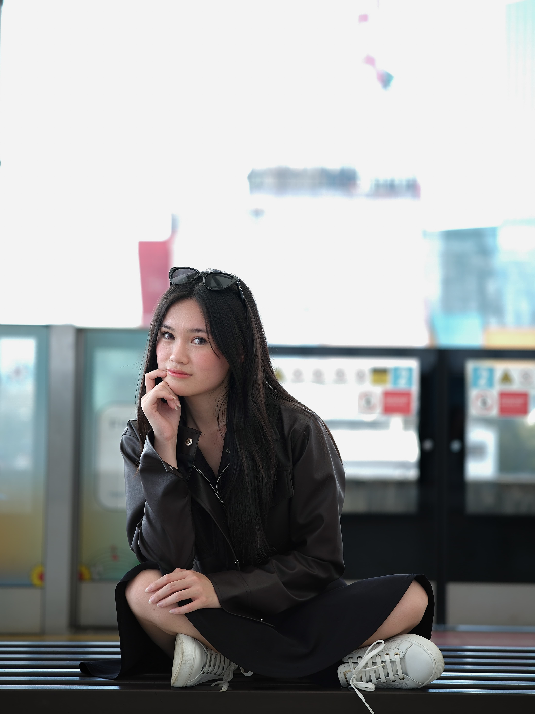
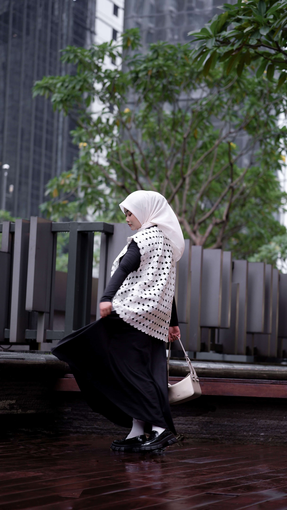
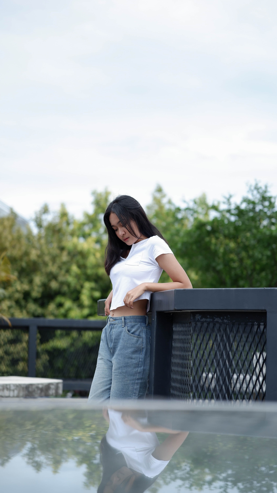
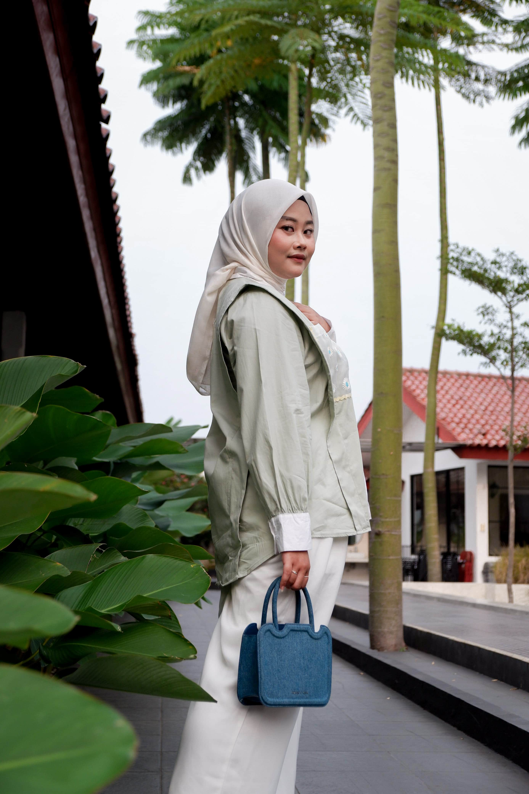
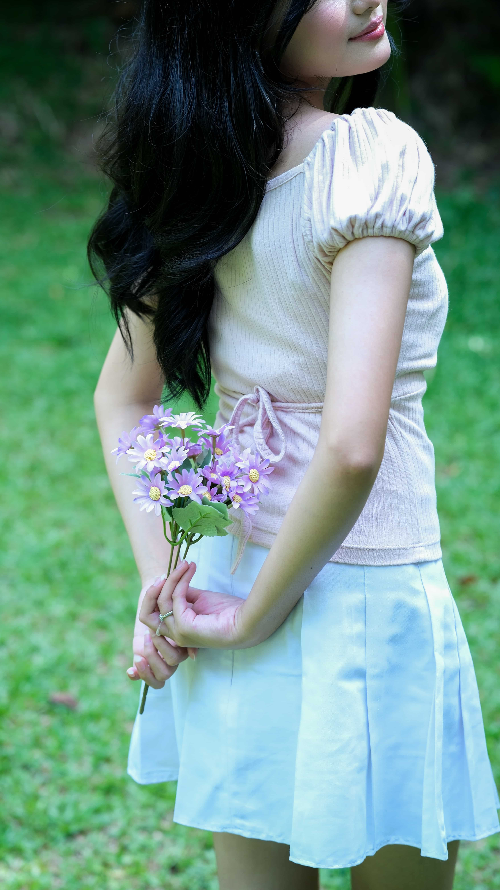
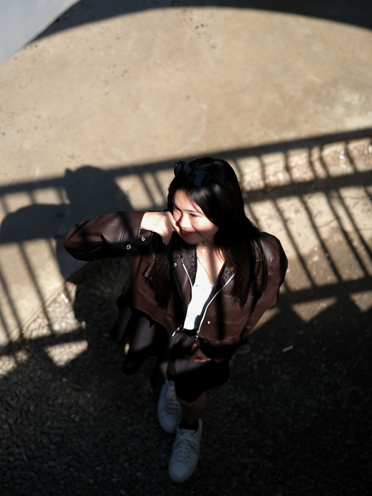
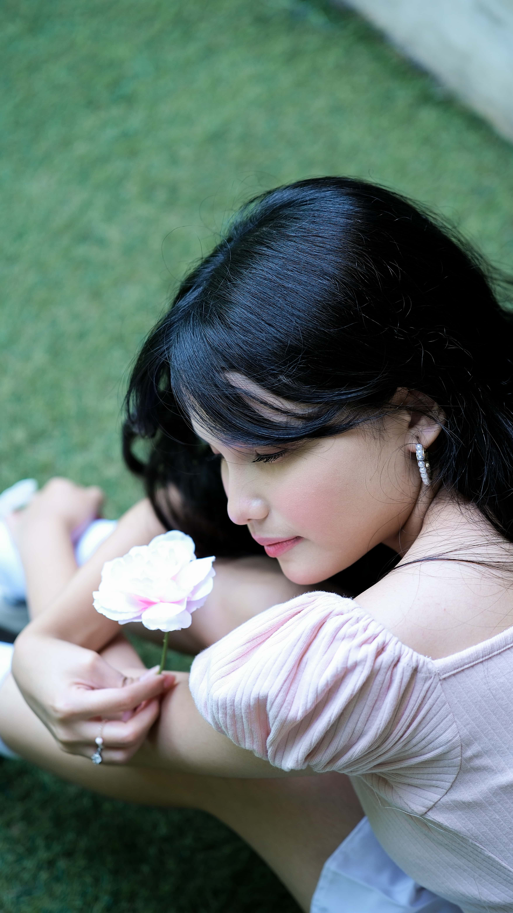
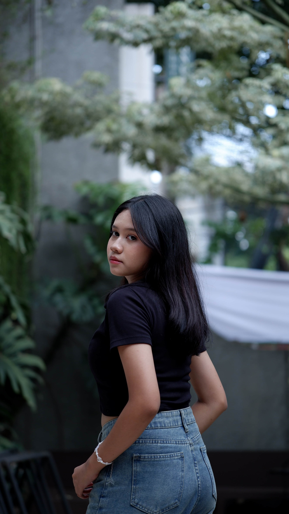

Punya konsep seru tapi terkendala fotografer? Sesi hunting 100% gratis. Saya cari portofolio, kamu dapat foto premium. *No drama, just pure art.*
Fokus saya adalah membangun aplikasi web yang andal serta aplikasi mobile yang responsif. Saya sangat menyukai arsitektur kode yang bersih dan performa sistem yang optimal.
Implementasi sistem informasi pengajuan cuti, lembur, dan absensi berbasis mobile terintegrasi untuk efisiensi alur persetujuan divisi.
Pengembangan platform web toko online dengan manajemen inventaris kustom, sistem pembayaran otomatis, dan dasbor analitik real-time.
Bagi saya, fotografi portrait adalah tentang menangkap esensi, ekspresi alami, dan cerita unik dari setiap individu. Saya lebih banyak berfokus pada ruang lingkup *female portraiture* dengan pendekatan pencahayaan yang dramatis dan estetik.

Naura / 01
ISO 320 · f/1.7 · 1/200s
Bella / 02
ISO 80 · f/1.7 · 1/400s
Laras / 03
ISO 1000 · f/2.8 · 1/80s
Neya / 04
ISO 200 · f/1.8 · 1/2500s
Laras / 05
ISO 800 · f/2.8 · 1/160s
Naura / 06
ISO 200 · f/2.8 · 1/200s
Bella / 07
ISO 100 · f/2.0 · 1/400s
Naura / 08
ISO 200 · f/1.7 · 1/200s
Zahra / 09
ISO 100 · f/1.8 · 1/125sPunya ide proyek digital, aplikasi web/mobile yang butuh sentuhan developer? Atau kamu seorang model/talent yang ingin berkolaborasi untuk mengumpulkan portofolio foto portrait berkualitas? Yuk, isi form resmi di bawah untuk menyelaraskan konsep!
Diskusikan ide pembuatan sistem web, aplikasi mobile, atau proyek open-source bersama saya secara kasual.
Terbuka untuk kolaborasi konsep portrait (*Time for Print*), baik untuk kebutuhan portofolio bersama, konsep tematik, maupun eksplorasi visual baru.